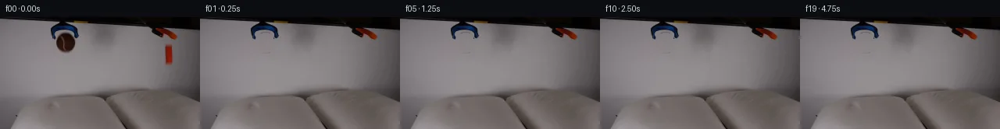

![首帧]()

Round 00
2026-11-04T18:10:01.347987+00:00像素候选变化代码 +361/−0inspection 更新
pixels 086ca102c2b6ff3e · code 43c126e33210bd73
查看本轮 generate.py 真实 diff
--- previous/generate.py
+++ current/generate.py
@@ -0,0 +1,361 @@
+"""PixelWorld vision-input generator, case_0001.
+
+Method (see METHOD.md / OBSERVATION.md for the full write-up):
+ * Build a clean static plate by inpainting the two moving objects' wall
+ regions with per-row horizontal interpolation between clean wall strips.
+ * Cut the brown tennis ball and orange block as premultiplied RGBA sprites,
+ alpha from measured darkening/colour deficit vs the reconstructed wall.
+ * Simulate 1-D gravity + spring-damper pillow contact at 1 kHz (plus a
+ small plastic pillow dent and a slight block tumble).
+ * Render frames with an 0.18 s shutter (8 averaged sub-samples -> motion
+ blur), sub-pixel affine transforms, soft contact shadows and dent warps.
+ * Frame 00 is forced byte-identical to first_frame.png.
+Only local numpy/PIL/scipy pixel operations are used.
+"""
+from pathlib import Path
+import numpy as np
+from PIL import Image
+from scipy.ndimage import gaussian_filter
+
+CASE = Path(__file__).parent
+TMP = CASE / '.tmp'
+TMP.mkdir(exist_ok=True)
+
+H, W = 144, 256
+GRAV = 50.0 # px / s^2
+DT_SIM = 0.001
+T_END = 5.0
+FPS = 4
+N_FRAMES = 20
+SHUTTER = 0.18
+N_SUBS = 8
+
+# ---------------------------------------------------------------- load
+orig = np.asarray(Image.open(CASE / 'first_frame.png').convert('RGB'), dtype=np.float32)
+
+
+def wall_strip(plate, y0, y1, x0a, x1a, x0b, x1b):
+ """Per-row linear wall interpolation between two clean anchor strips."""
+ la = plate[y0:y1, x0a:x1a].mean(axis=1)
+ lb = plate[y0:y1, x0b:x1b].mean(axis=1)
+ xa = 0.5 * (x0a + x1a - 1)
+ xb = 0.5 * (x0b + x1b - 1)
+ xs = np.arange(W, dtype=np.float32)
+ t = (xs - xa) / (xb - xa)
+ return la[:, None] * (1 - t[None, :, None]) + lb[:, None] * t[None, :, None]
+
+
+def luminosity(im):
+ return 0.299 * im[..., 0] + 0.587 * im[..., 1] + 0.114 * im[..., 2]
+
+
+# ------------------------------------------------- static clean plate
+plate = orig.copy()
+
+# ---- ball wall box: rows 18..48, interpolate from x56..64 and x102..110
+wall_ball = wall_strip(plate, 18, 48, 56, 65, 102, 111)
+yy, xx = np.mgrid[18:48, 0:W]
+ell = ((xx - 83.5) / 13.4) ** 2 + ((yy - 32.5) / 13.2) ** 2
+ball_fill = ell <= 1.0
+# protect the black support rod (right) and blue claw legs (both sides)
+rod = (xx >= 93.5) & (yy <= 27.5)
+leg_l = (xx <= 70.8) & (yy <= 29.5)
+ball_fill &= ~(rod | leg_l)
+sub = plate[18:48]
+sub[ball_fill] = wall_ball[ball_fill]
+plate[18:48] = sub
+
+# ---- block wall box: rows 33..63, interpolate from x199..207 and x225..232
+wall_blk = wall_strip(plate, 33, 63, 199, 208, 225, 233)
+yb, xb = np.mgrid[33:63, 0:W]
+inside = (xb >= 209.0) & (xb <= 223.0) & (yb >= 33.2) & (yb <= 62.6)
+sub = plate[33:63]
+sub[inside] = wall_blk[inside]
+plate[33:63] = sub
+
+# ------------------------------------------------------- sprite cuts
+def cut_sprite(x0, x1, y0, y1, wall, alpha):
+ act = orig[y0:y1, x0:x1]
+ wl = wall[y0:y1, x0:x1]
+ a = alpha[y0:y1, x0:x1][..., None].astype(np.float32)
+ safe = np.maximum(a, 1e-4)
+ rgb = np.clip((act - wl * (1 - a)) / safe, 0, 255)
+ return rgb, a[..., 0]
+
+
+# ball: deficit-luminance alpha inside a soft ellipse
+wb_full = np.zeros_like(orig)
… diff truncated; 274 more lines …